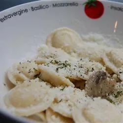

Ravioli Recipe

Everyone loves this vegetarian alfredo ravioli dish loaded with cheese, mushrooms, and garlic.
Ingredients
- 1 (20 ounce) package cheese ravioli
- 3 tablespoons butter
- 1 (8 ounce) package fresh mushrooms, sliced
- 4 cloves garlic, minced
- 1 (10 ounce) container Alfredo sauce
- 2 tablespoons grated Parmesan cheese
- 2 green onions, finely chopped
- ¼ teaspoon crushed red pepper flakes to taste
Directions
Cook the Ravioli.
- Bring a large pot of water to a boil. Add ravioli and cook for 5 to 8 minutes or until al dente; drain.
Add the Mushrooms.
- Heat butter in a skillet over medium heat. Stir in mushrooms and garlic and cook until tender.
Add the Sauce.
- In a medium saucepan over low heat, toss the cooked ravioli with Alfredo sauce to coat. Mix in mushrooms and garlic. Cook and stir until sauce is heated.
Serve and Enjoy!
- Top with Parmesan cheese, green onion, and red pepper.